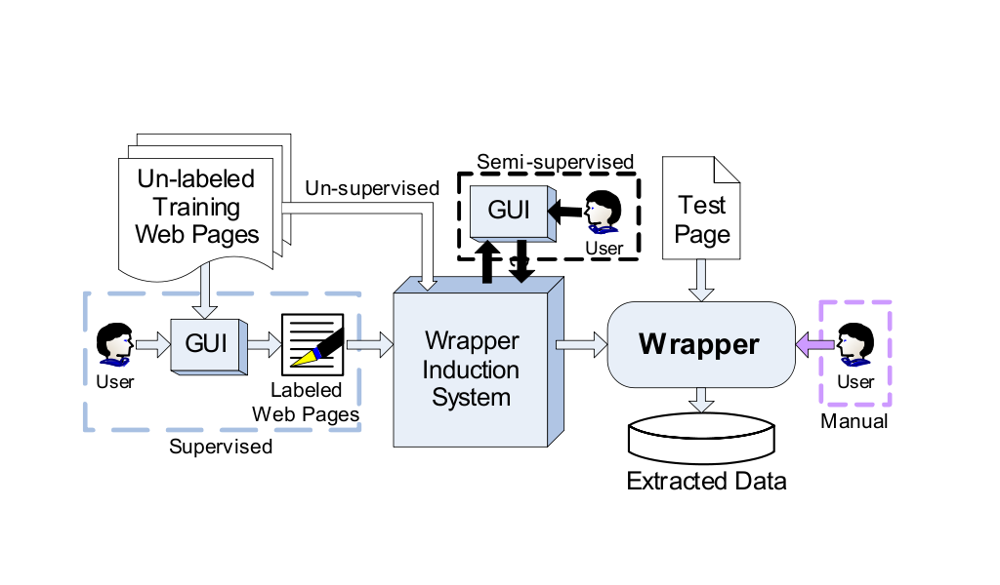

web information extraction
通过标注(traning pages) => 生成抽取器 => 根据抽取器抽取网页
根据发展的过程或者人工参与的程度分为下面几个阶段
- manually-constructed
-
faciliate programmers in writing extraction rules
need general programming language or specify programming language
WebOQL
hypertree
select from where 的方式来书写
- supervised
-
use machine learning for automatic rule generalization
Input: a set of web pages
Output: a wrapper
hermes
- semi-supervised
-
reducing labeling and creating
IEPAD:
通过PAT Tree: binary suffix tree 自动发现网页中的重复结构
<li><b>T</b><b>T</b><b>T</b></li>
用户指定 第几个T 是什么, 分别是Title body 等等。
- unsupervised
-
no labeling
Dela:
an extension of IEPAD
1. 剔除那些页面相同的部分
2. 然后再发现重复结构
a general view of wi system

根据标注页面能够生成Wrapper
能够根据多个标注页面生成Wrapper
根据Wrapper 能够抽取自身 和其他网页
编辑姑娘很容易标注 (* hongxi chun都刻意强调了此点)
包含两个部分:
Wrapper Induction
Information Extraction
Markit Data Structure
Logical-based
Map-based
标注多个页面 => 根据标注结果 => {1. 筛选相关属性, 2. 记录内部vdom, 3. 都记录} => Wrapper Induction
条件选择方式分为两种：
机器学习:
根据统计情况来选择，分为两种情况
1. 非连续 背景色
2. 连续值 x , y 坐标等等
选择方差较小的
用户指定 必须满足
before after internal等等
初步认为每个条件的权重是一样的
Extraction:
根据Selector 筛选 => ｛1. 跟据相关条件筛选, 2. 根据光谱分析投影, 3. 先筛选， 再投影}
按照两周一个周期的方式来安排
-
通过Markit抽取Title， 打通Markit的各个部分
标注 => 生成Wrapper => 抽取
时间周期 2009.07.20 - 2009.07.31
主要工作内容
1. 完成只支持Selector 筛选的Markit 代码开发
2. VdomBrowser支持展现Model， 能够生成单节点的标注数据
3. 通过抽取Title 测试以上结果
完成标志：
能够标注、抽取Title 正文
-
实现 VdomBrowser的标注功能
时间周期 2009.08.03 - 2009.08.14
主要工作内容:
1. VdomBrowser 支持多节点标注
2. VdomBrowser 支持递归层次Pattern标注
3. VDomBrowser 能够自动学习pattern 多次出现的情况， 能够半自动标注
4. VdomBrowser 支持多页面标注
5. VdomBrowser 支持基本的交互
5. 以Comment、Param 来测试VdomBrowser的标注， 并只根据selector进行抽取
完成标志：
能够标注Comment、Param、 能够抽取网页比较规则的Comemnt、Param
-
实现Attri Condtion(x, y, w, h, bgcolor, fontsize... )
Before Condtion
After Condtion
Internal Condtion....
或者光谱投影算法
时间周期 2009.08.17 - 2009 - 28
主要工作内容:
1. 实现AttriCondtion...
2. 实现光谱投影算法
3. 实现递归、多次出现的任意model 抽取
完成标志
算法实现， 并验证算法
-
写Markit相关文档、给VdomBrowser 增加更多交互式的feature
给Markit添加上线所需要的相关脚本
时间周期 2009.08.31 - 2009.09.11
主要工作内容:
1. 实现上线相关脚本 作为xhunter集群一部分上线
2. 完成Markit 相关介绍文档
完成标志：
上线
1. 每个页面生成一个Wrapper, 然后合并Wrapper呢， 还是结合所有页面生成一个Wrapper?
这决定当新标注一个页面时， 应该如何生成Wrapper
2. 标注界面
3. Wrapper Induction